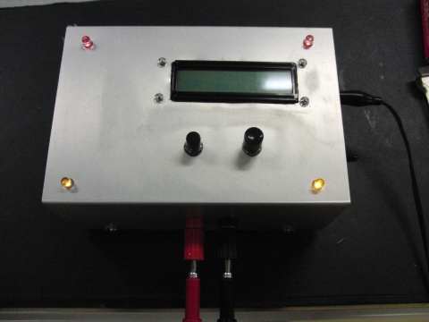

本研究室では、電子材料・磁性材料・光学材料に関する研究を行っています。
このページは来年度、５年生で卒業研究のために研究室に入る電子工学分野の４年生向けに書かれています。当分野の学生は、３年生までは主に電子回路や電気回路、プログラミングについて学んできており、 電子材料を学ぶのは４年生の後期になってからです。そのため、電子材料について興味をもつというのは難しいのだろうと思います。できるだけ平易に研究紹介をしたいと思います。


硫化すずは真っ黒な半導体で光を吸収する特性に優れているため，太陽電池の光吸収材料として注目されています。 理論上は２５％から３０％のエネルギー変換効率があるはずなのですが，いまだに世界のトップデータでもエネルギー変換効率は４％程度しかありません。 その理由は何なのか？ 原因を取り除くことはできるのか？ を明らかにすることを目的に研究を行っています。
分子線エピタキシー装置

高真空の成長炉の中で、硫化すず薄膜を作るための装置です。
ロードロック室があり、成長炉を高真空に保ったまま、試料の出し入れができます。
目的とする物質の原料を加熱蒸発させ、土台となる半導体結晶基板上に蒸着します。
真空度が高いため、蒸発した原料は、ビーム状になり基板に向かって飛んで行くため、分子線と名前がついています。

油回転真空ポンプと油拡散ポンプの２つの真空ポンプからなり、高真空を作るために用います。 真空中熱処理などに利用しています。真空蒸着や真空中熱処理などに利用。
ホットプレート、ホットプレート付きマグネチックスターラー


ホットプレートは基板に塗布したゾルゲル法や金属有機化合物分解法で用いる原料溶液を、乾燥したり、仮焼成するために使用しています。 スターラーはゾルゲル溶液を撹拌するときに用います。 また、ホットプレート付きなので加熱しながら撹拌できます。よく使うので複数台有。
電気炉

薬品や試料を加熱するために用います。最高で900度まで加熱することができます。粉末やゾルゲル膜を焼結するために利用しています。
上の電気炉は、元々On/Off制御だったものをPID制御できるように、温度調整器を交換しました。
また、リレーも機械式からソリッドステートリレーに変更しました。
デシケーター
作製した試料を保管する容器です。半導体や金属の劣化を防ぐために中は真空になっています。複数台所有。
金スパッタ装置
画像準備中
硫化すず薄膜の電気特性を測定する時に，金の電極を形成するために使用します。
真空蒸着装置

高真空中で、金属原料を載せたタングステン・ボートやモリブデン・ボートに数十アンペアの電流を流し、発生したジュール熱で金属を気化させます。
気化した金属は、真上に備えたシリコンなどの基板に蒸着されます。高真空は油回転ポンプと油拡散ポンプの２つで作ります。
使用用途としては次のとおりです。
● 半導体への電極形成（アルミニウム電極など）
● 太陽電池材料である硫化すずを作るためのすず薄膜の作製(2016年)
● 透明n型半導体である酸化亜鉛薄膜の作製(2016年)
改造履歴
● 基板ヒーターの取り付けた（2016年6月)
● 基板の位置を5 cmと10 cmの2つを選択できるようにした（2016年11月)
● 基板ヒーターに熱電対を取り付け、温度のモニタリングができるようにした（2016年11月)
大気中で温度を計測して、所定の温度になる電圧を調べたのだが、真空中に入れると100℃も違うことがわかりました。
画像準備中
ゾルゲル法や金属有機化合物分解法の原料溶液を基板に塗布し、台を回転させ遠心力で薄く引き伸ばしてコーティングする装置です。
スピンコート・コントローラ

ゾルゲル法や金属有機化合物分解法の原料溶液を基板に塗布し、台を回転させ遠心力で薄く引き伸ばすコーティング方法をスピンコート法と呼びます。 このときの回転速度を制御するコントローラです。自作でPIC、バイポーラトランジスタ、FETでできています。
Van der Pauw法による抵抗率測定装置

半導体や金属薄膜の抵抗率を測定する方法のひとつにVan der Pauw法があります。 この装置はUSBでパソコンとつながっており、半自動で抵抗率を測定できます。 自作したもので、PIC、リレー、計装アンプでできています。 パソコン側の測定プログラムはVisual Basic2008で作成しました。
どのような学生に来てほしいか
４年生の電子材料の講義を受けて、もっと詳しく学びたいと思った人はこの分野に親和性があると考えてよいと思います。
まず、２年生まで学んだ化学に興味がある人にも来てほしいと思います。 エタノールなどのアルコールを溶媒とし、塩化すず・２水和物やチオ尿素などを溶質として溶かし、その溶液を加熱することで、硫化すずという1.3eVのバンドギャップをもつ半導体を作製するという研究をおこなっています。 溶液に酸やキレート剤を追加で混ぜるということをするのですが、反応過程を考えることができるとより研究を楽しめると思います。
溶媒などの条件を変えて作製した溶液

溶液をガラス板に塗って300度で加熱し、溶媒を蒸発させて得られた膜。膜が黒いのは可視光を吸収するバンドギャップをもつ半導体であるため
また、４年生で学んだ数値解析について興味がある人にも来てほしいです。 強磁性体（磁石のこと）の研究がこの十数年、活発に行われている背景を受けて、磁性体のシミュレーションプログラムを作製しています。 磁性体内部の磁気が時間と空間を変数とする偏微分方程式で記述できるのですが、それを手計算で行えるのは球や無限遠に長い円柱や、無限遠に平たい直方体だけです。 ベクトル解析の知識が必要になるので数学が苦手ではなく、かつプログラミングも苦手でないという条件に当てはまる人でないとこの研究は進められないと思います。

対象とする磁性材料や形状に対して、有効磁場をどのように記述するか、どのような数値解析アルゴリズムを構築するかが課題となる
教員側もどうすればうまくいくのか、どういう結果が得られるのかやってみないと分からないことを対象に研究しているので、地道に目標に向かって試行錯誤を繰り返しながら進めることが出来る人で、これらのどれかに興味があれば、ぜひ希望してください。
(C) 2014- 釧路工業高等専門学校 創造工学科 エレクトロニクスコース 機能材料研究室. All rights reserved.